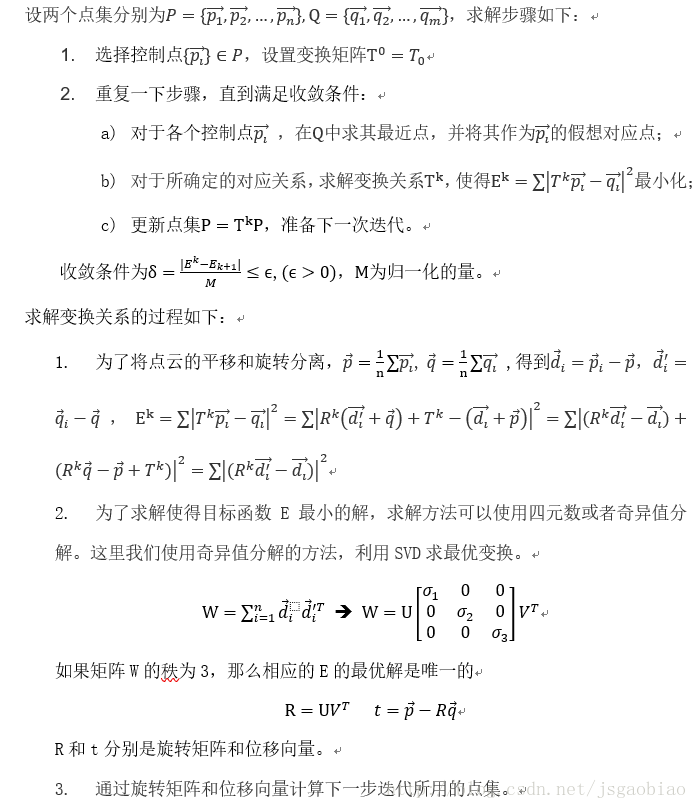
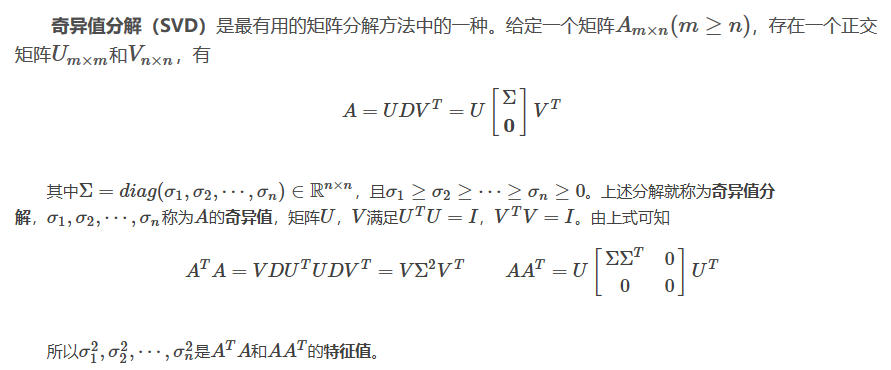

K-dimension Tree
- 简介
-
KD tree 是对数据点在k维空间（如二维(x，y)，三维(x，y，z)，k维(x1，y，z..)）中划分的一种数据结构，主要应用于多维空间关键数据的搜索（如：范围搜索和最近邻搜索）。
k-d树是一种空间划分树，把整个空间划分为特定的几个部分，然后在特定空间的部分内进行相关搜索操作。 - 构建
-
输入： 数据点集(Data set)和所在空间(Range)
1. 若点集为空，则返回空树。
2. 调用节点生成程序：
(1) 确定split域，对于所有描述子数据(特征向量)，统计他们在每个维上的数据方差。以SURF为例，描述子为64维，可得到64个方差。 3. 从特征描述符集合以及它们在两个数据集中的x,y,z位置，基于特征和位置之间的相似性来估计对应关系;
4. 假设数据被认为包含噪声的，并不是所有的对应关系都是有效的，所以舍弃对配准过程产生负面影响的那些负影响对应关系;
5. 从剩下的一组好的对应关系中，估计一个变换行为。 - 迭代最近点(icp)
-
迭代最近点的思路为：
根据某种几何特性对数据进行匹配，并设这些匹配点为假想的对应点，然后根据这种对应关系求解运动参数。
再利用这些运动参数对数据进行变换。并利用同一几何特征，确定新的对应关系，重复上述过程进行迭代，使得数据中的重叠部分充分吻合。
ICP方法中使用的几何特性即点在空间中的距离。
 - SVD奇异值分解
-

再分别通过奇异值分解求得V,D。import numpy.matlib import numpy as np A = np.array([[1,5,7,6,1],[2,1,10,4,4],[3,6,7,5,2]]) ATA=np.dot(A.T,A) lambdaV,V = np.linalg.eig(ATA) AAT=np.dot(A,A.T) lambdaU,U = np.linalg.eig(AAT) sigma = np.sqrt(lambdaU)
icp Python实现
import numpy as np
from sklearn.neighbors import NearestNeighbors
def best_fit_transform(A, B):
'''
Calculates the least-squares best-fit transform that maps corresponding points A to B in m spatial dimensions
Input:
A: Nxm numpy array of corresponding points
B: Nxm numpy array of corresponding points
Returns:
T: (m+1)x(m+1) homogeneous transformation matrix that maps A on to B
R: mxm rotation matrix
t: mx1 translation vector
'''
assert A.shape == B.shape
# get number of dimensions
m = A.shape[1]
# translate points to their centroids
centroid_A = np.mean(A, axis=0) #求中心点
centroid_B = np.mean(B, axis=0)
AA = A - centroid_A #归一化
BB = B - centroid_B
# rotation matrix
H = np.dot(AA.T, BB)
U, S, Vt = np.linalg.svd(H)
R = np.dot(Vt.T, U.T)
# special reflection case
if np.linalg.det(R) < 0:
Vt[m-1,:] *= -1
R = np.dot(Vt.T, U.T)
# translation
t = centroid_B.T - np.dot(R,centroid_A.T)
# homogeneous transformation
T = np.identity(m+1)
T[:m, :m] = R
T[:m, m] = t
return T, R, t
def nearest_neighbor(src, dst):
'''
Find the nearest (Euclidean) neighbor in dst for each point in src
Input:
src: Nxm array of points
dst: Nxm array of points
Output:
distances: Euclidean distances of the nearest neighbor
indices: dst indices of the nearest neighbor
'''
assert src.shape == dst.shape
neigh = NearestNeighbors(n_neighbors=1)
neigh.fit(dst)
distances, indices = neigh.kneighbors(src, return_distance=True)
return distances.ravel(), indices.ravel()
def icp(A, B, init_pose=None, max_iterations=20, tolerance=0.001):
'''
The Iterative Closest Point method: finds best-fit transform that maps points A on to points B
Input:
A: Nxm numpy array of source mD points
B: Nxm numpy array of destination mD point
init_pose: (m+1)x(m+1) homogeneous transformation
max_iterations: exit algorithm after max_iterations
tolerance: convergence criteria
Output:
T: final homogeneous transformation that maps A on to B
distances: Euclidean distances (errors) of the nearest neighbor
i: number of iterations to converge
'''
assert A.shape == B.shape
# get number of dimensions
m = A.shape[1]
# make points homogeneous, copy them to maintain the originals
src = np.ones((m+1,A.shape[0]))
dst = np.ones((m+1,B.shape[0]))
src[:m,:] = np.copy(A.T)
dst[:m,:] = np.copy(B.T)
# apply the initial pose estimation
if init_pose is not None:
src = np.dot(init_pose, src)
prev_error = 0
for i in range(max_iterations):
# find the nearest neighbors between the current source and destination points
distances, indices = nearest_neighbor(src[:m,:].T, dst[:m,:].T)
print("indices:")
print(indices)
# compute the transformation between the current source and nearest destination points
T,_,_ = best_fit_transform(src[:m,:].T, dst[:m,indices].T)
# update the current source
src = np.dot(T, src)
print("src:")
print(src)
# check error
mean_error = np.mean(distances)
print("mean_error:")
print(mean_error)
if np.abs(prev_error - mean_error) < tolerance:
break
prev_error = mean_error
# calculate final transformation
T,_,_ = best_fit_transform(A, src[:m,:].T)
return T, distances, i
import time
# Constants
N = 5 # number of random points in the dataset
num_tests = 1 # number of test iterations
dim = 3 # number of dimensions of the points
noise_sigma = .01 # standard deviation error to be added
translation = .1 # max translation of the test set
rotation = .1 # max rotation (radians) of the test set
def rotation_matrix(axis, theta):
axis = axis/np.sqrt(np.dot(axis, axis))
a = np.cos(theta/2.)
b, c, d = -axis*np.sin(theta/2.)
return np.array([[a*a+b*b-c*c-d*d, 2*(b*c-a*d), 2*(b*d+a*c)],
[2*(b*c+a*d), a*a+c*c-b*b-d*d, 2*(c*d-a*b)],
[2*(b*d-a*c), 2*(c*d+a*b), a*a+d*d-b*b-c*c]])
def test_best_fit():
# Generate a random dataset
A = np.random.rand(N, dim)
total_time = 0
for i in range(num_tests):
B = np.copy(A)
# Translate
t = np.random.rand(dim)*translation
B += t
# Rotate
R = rotation_matrix(np.random.rand(dim), np.random.rand()*rotation)
B = np.dot(R, B.T).T
# Add noise
B += np.random.randn(N, dim) * noise_sigma
# Find best fit transform
start = time.time()
T, R1, t1 = best_fit_transform(B, A)
total_time += time.time() - start
# Make C a homogeneous representation of B
C = np.ones((N, 4))
C[:,0:3] = B
# Transform C
C = np.dot(T, C.T).T
assert np.allclose(C[:,0:3], A, atol=6*noise_sigma) # T should transform B (or C) to A
assert np.allclose(-t1, t, atol=6*noise_sigma) # t and t1 should be inverses
assert np.allclose(R1.T, R, atol=6*noise_sigma) # R and R1 should be inverses
print('best fit time: {:.3}'.format(total_time/num_tests))
return
def test_icp():
# Generate a random dataset
A = np.random.rand(N, dim)
print("A:")
print(A)
total_time = 0
for i in range(num_tests):
B = np.copy(A)
# Translate
t = np.random.rand(dim)*translation
B += t
# Rotate
R = rotation_matrix(np.random.rand(dim), np.random.rand() * rotation)
B = np.dot(R, B.T).T
print("R:")
print(R)
print("t:")
print(t)
# Add noise
B += np.random.randn(N, dim) * noise_sigma
# Shuffle to disrupt correspondence
np.random.shuffle(B)
print("B:")
print(B)
# Run ICP
start = time.time()
T, distances, iterations = icp(B, A, tolerance=0.000001)
total_time += time.time() - start
# Make C a homogeneous representation of B
C = np.ones((N, 4))
C[:,0:3] = np.copy(B)
# Transform C
C = np.dot(T, C.T).T
assert np.mean(distances) < 6*noise_sigma # mean error should be small
assert np.allclose(T[0:3,0:3].T, R, atol=6*noise_sigma) # T and R should be inverses
assert np.allclose(-T[0:3,3], t, atol=6*noise_sigma) # T and t should be inverses
print('icp time: {:.3}'.format(total_time/num_tests))
return
if __name__ == "__main__":
#test_best_fit()
test_icp()
引用自：https://blog.csdn.net/jsgaobiao/article/details/78873718